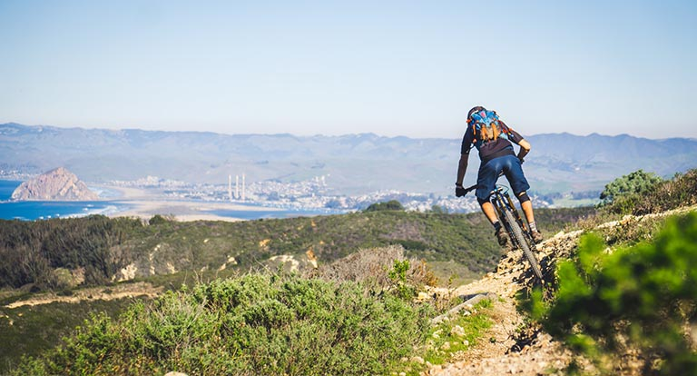

Road bikes don’t have the monopoly on adventure, and sometimes going off the beaten path can have the biggest reward. Trek Travel has international mountain bike trips that showcase the natural beauty of the world around us like no other. Whether it’s endless flowing singletrack navigating the lava fields of Iceland, climbing magnificent granite slabs in Norway or descending into Tumalo Falls in Bend, these trips offer memories that just another weekend in Moab simply can’t.
From $1999 per person
Location: MT
Ryder Type: Recreational
Duration: 4 days | 3 nights
Style: Explorer
Length: 22 miles

Montana Trails
You may find Montana to be more than a mountain biking destination, you just may want to call it home. It's the perfect place to spend some time outdoors on a mountain bike tour loaded with flowy, purpose-built single track through dense forests and dramatic landscapes. Montana is home to world class riding on an expansive network of hundreds of miles of trails and it's growing every year.
From $1999 per person
Location: MT
Ryder Type: Active
Duration: 4 days | 3 nights
Style: Explorer
Length: 18 miles